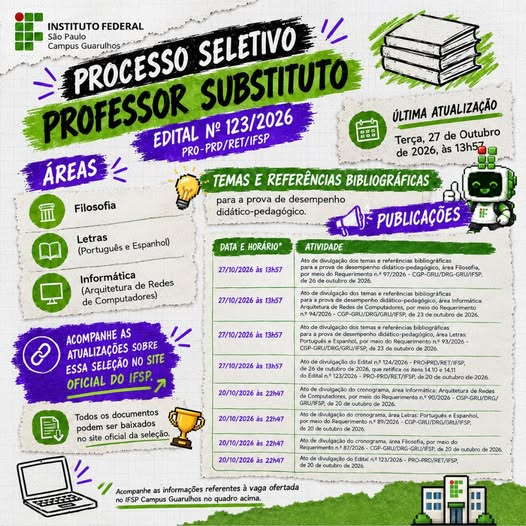
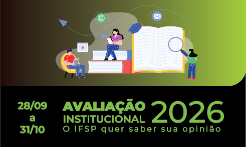
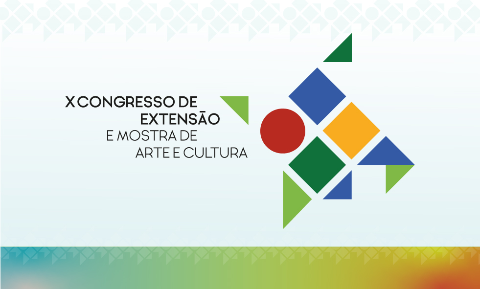
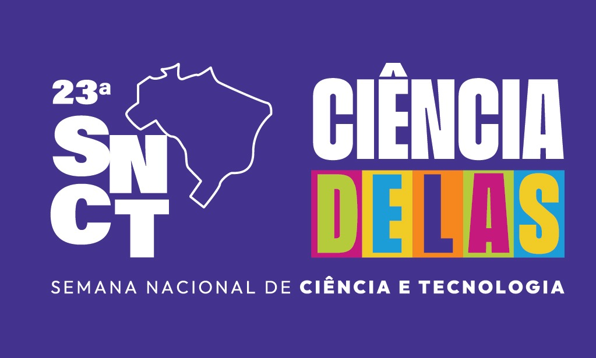

Processo seletivo
O IFSP Campus Guarulhos divulgou os temas e as referências bibliográficas para a prova de desempenho didático-pedagógico do Processo Seletivo Simplificado para Professor Substituto (Edital nº 123/2026).
Saiba maisPróximas atividades e prazos do IFSP e do Campus Guarulhos.

O IFSP Campus Guarulhos divulgou os temas e as referências bibliográficas para a prova de desempenho didático-pedagógico do Processo Seletivo Simplificado para Professor Substituto (Edital nº 123/2026).
Saiba mais
Questionário que subsidia a avaliação e o planejamento das ações institucionais. O prazo para participação foi prorrogado até 15 de novembro.
Saiba mais
Congresso de Extensão e Mostra de Arte e Cultura do IFSP: um espaço de socialização das ações de extensão e de troca de saberes com a comunidade.
Saiba mais
De 26 de outubro a 1º de novembro de 2026, com o tema “Ciência Delas”, valorizando o protagonismo das mulheres na ciência e na tecnologia.
Saiba mais
Quando: 24, 25 e 26 de novembro de 2026.
Onde: IFSP Campus Guarulhos.
17º Congresso de Inovação, Ciência e Tecnologia.
Inscrições até: 18 de novembro de 2026.
Sorteio: 30 de novembro de 2026.
Cursos técnicos gratuitos (Edital nº 192/2026).
Inscrições de projetos: 29 de outubro a 30 de novembro de 2026.
Programa de iniciação científica do IFSP.